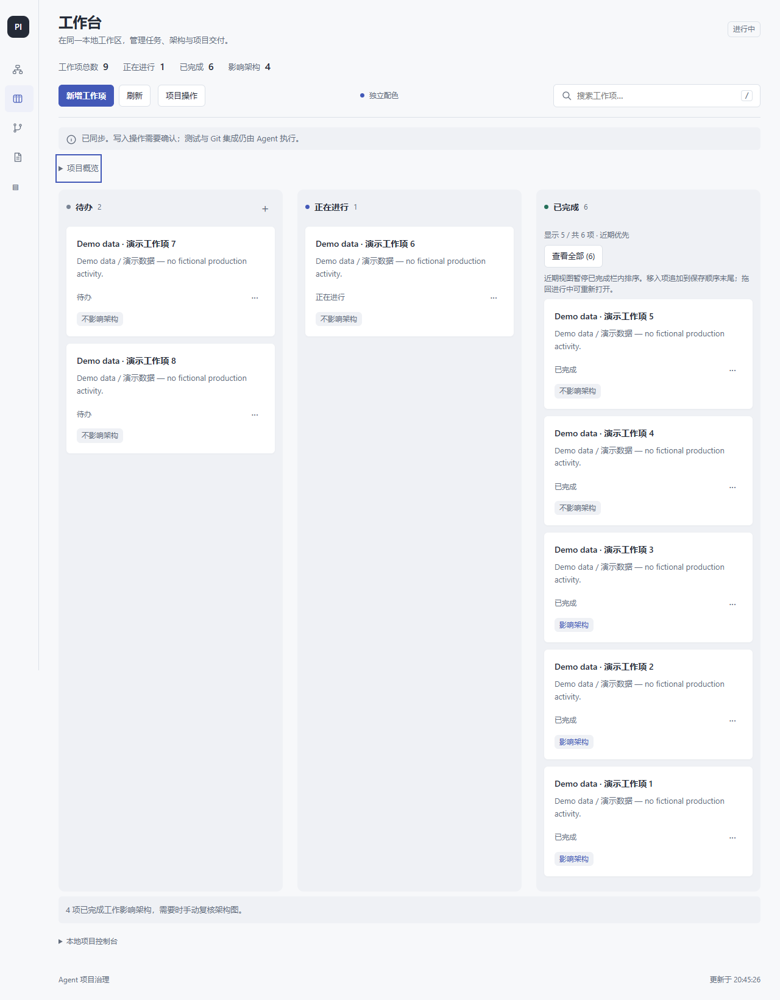
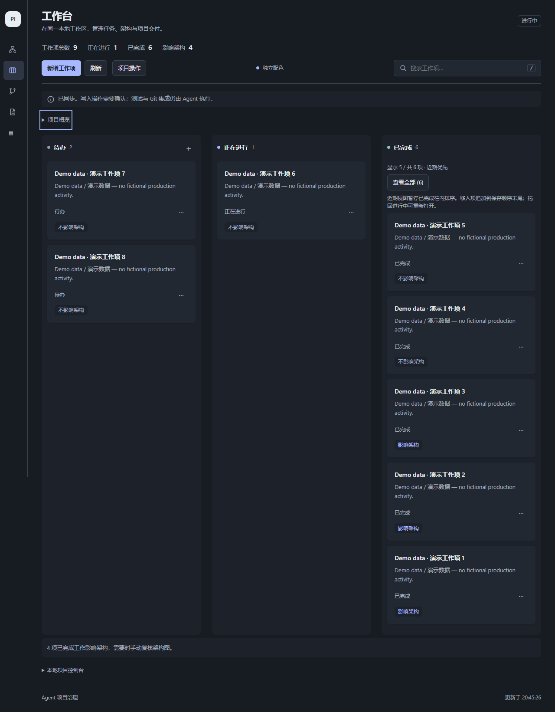
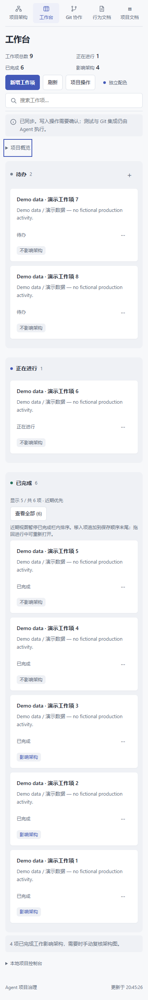
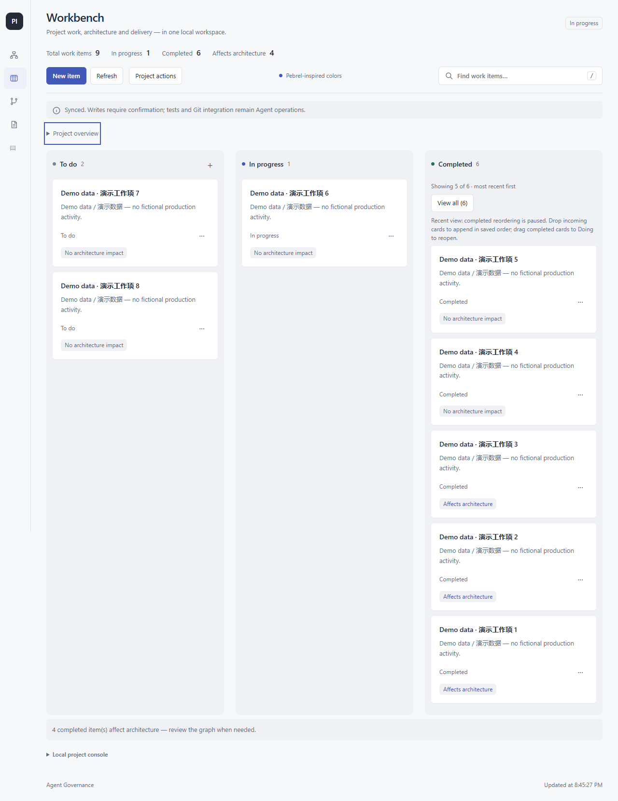
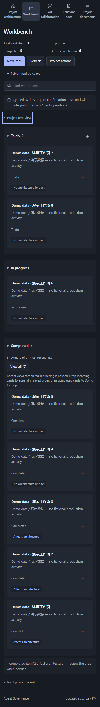
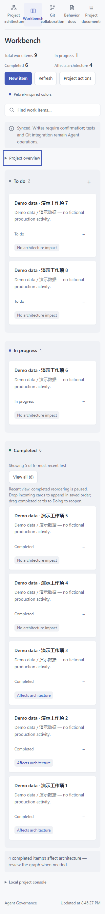

0.9.1 · 内容优先的工作台
真实HTTP与临时项目，全部卡片为明确标注的测试数据。去掉常驻欢迎/大统计卡；紧凑指标、默认收起的概览；完整保留任务、历史和统计来源。自动断言不等于真实安装宿主或人工触屏验收。
中文 · 桌面 · 明色
中文 · 桌面 · 暗色
中文 · 390px
English · Desktop
English · 390px · Dark
English · 320px · Light